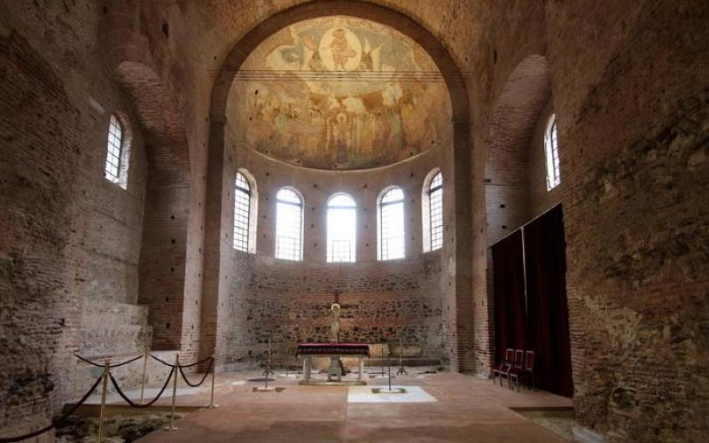

Η Ροτόντα βρίσκεται στο ανατολικό τμήμα του ιστορικού κέντρου της Θεσσαλονίκης και αποτελεί ένα από τα σπουδαιότερα ρωμαϊκά μνημεία στην Ελλάδα. Από το 1988 ανήκει στα μνημεία Παγκόσμιας Πολιτιστικής Κληρονομιάς της UNESCO. Στις 18 Δεκεμβρίου 2015 η Ροτόντα μετά από τις εργασίες αποκατάστασης άνοιξε τις πύλες της στο κοινό και ξαναβρήκε τη θέση της στην πολιτιστική κληρονομιά της Θεσσαλονίκης. Η Ροτόντα αποτελεί τμήμα του ανακτορικού συγκροτήματος του αυτοκράτορα Γαλερίου και κατασκευάστηκε κατά τη διάρκεια της Ρωμαϊκής Τετραρχίας. Μαυσωλείο, χώρος λατρευτικών μυστηρίων, ναός, μητρόπολη, τζαμί, La Rotonde, μουσείο. Όπως κι αν περιγραφεί η Ροτόντα δεν παύει να είναι άρρηκτα δεμένη και συνυφασμένη με την εικόνα και την ιστορία της Θεσσαλονίκης.